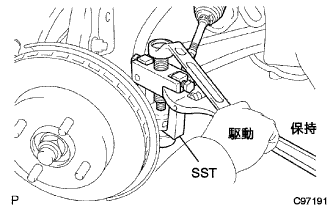
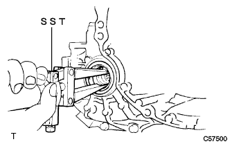
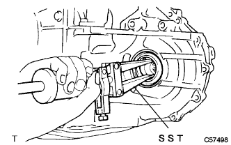

フロントディファレンシャルオイルシール（U441E） 取り外し |
| 1. エンジンアンダ カバー LH取りはずし |
ボルト2本およびスクリュ2本をはずし、エンジンアンダーカバーLHを取りはずす。
| 2. エンジンアンダ カバー RH取りはずし |
ボルト2本およびスクリュ2本をはずす。
ナットをはずし、エンジンアンダーカバーRHを取りはずす。
| 3. オートマチックトランスアクスルフルード抜き取り |
ドレーンプラグおよびガスケットをはずし、フルードを抜き取る。
新品のガスケットを介して、ドレーンプラグを締め付ける。
| 4. フロントタイヤ取りはずし |
| 5. フロントアクスル シャフト ナット LH取りはずし |
 |
ドライブシャフトの溝部に合わせてSSTをセットし、ハンマーを使用して、かしめを解く。
ソケツトレンチ(30mm)を使用して、ハブナットを取りはずす。
| 6. フロントアクスル シャフト ナット RH取りはずし |
RH側はLH側と同様の手順で行う。
| 7. スピード センサ FR LH切り離し |
ボルトをはずし、スピードセンサワイヤおよびフレキシブルホースをショックアブソーバASSYから切り離す。
 |
クリップをショックアブソーバASSYから切り離す。
 |
ボルトをはずし、スピードセンサFRをステアリングナックルから切り離す。
| 8. スピード センサ FR RH切り離し |
RH側はLH側と同様の手順で行う。
| 9. スタビライザ バー FR切り離し |
 |
ボルトをスパナ(10mm)で固定し、ナットを取りはずす。
クッションリテーナNo.1を2個およびクッション2個を取りはずし、スタビライザバーを切り離す。
| 10. タイロッド エンドSUB-ASSY LH切り離し |
コッターピンおよびキャッスルナットを取りはずす。
|  |
SSTを使用して、タイロッドエンドをステアリングナックルから切り離す。
| 11. タイロッド エンドSUB-ASSY RH切り離し |
RH側はLH側と同様の手順で行う。
| 12. フロントデイスクブレーキキヤリパASSY LH切り離し |
 |
ボルト2本をはずし、デイスクブレーキキヤリパASSYをステアリングナックルから切り離す。
| 13. フロントデイスクブレーキキヤリパASSY RH切り離し |
RH側はLH側と同様の手順で行う。
| 14. フロントディスク取りはずし |
ディスクとアクスルハブに合わせマークを付け、ディスクを取りはずす。
| 15. フロントアクスルASSY LH切り離し |
プラスチックハンマーを使用して、ドライブシャフトASSYの先端を軽くたたき、シャフトとアクスルASSYのかん合をはずす。
フロントアクスルASSYを車両外側に押して、アクスルASSYからドライブシャフトASSYを抜く。
| 16. フロントアクスルASSY RH切り離し |
RH側はLH側と同様の手順で行う。
| 17. ショック アブソーバASSY FR LH切り離し |
 |
ボルト2本およびナット2個をはずして、ショックアブソーバASSYをアクスルASSYから切り離す。
| 18. ショック アブソーバASSY FR RH切り離し |
RH側はLH側と同様の手順で行う。
| 19. フロントドライブ シャフトASSY LH取りはずし |
 |
SSTを使用して、ドライブシャフトASSYを取りはずす。
| 20. フロントドライブ シャフトASSY RH取りはずし |
RH側はLH側と同様の手順で行う。
| 21. フロントアクスルASSY LH固定 |
 |
| 22. フロントアクスルASSY RH固定 |
RH側はLH側と同様の手順で行う。
| 23. トランスアクスルケース オイル シール NO.2取りはずし |
|  |
SSTを使用して、オイルシールを取りはずす。
| 24. トランスアクスルケース オイル シール取りはずし |
|  |
SSTを使用して、オイルシールを取りはずす。